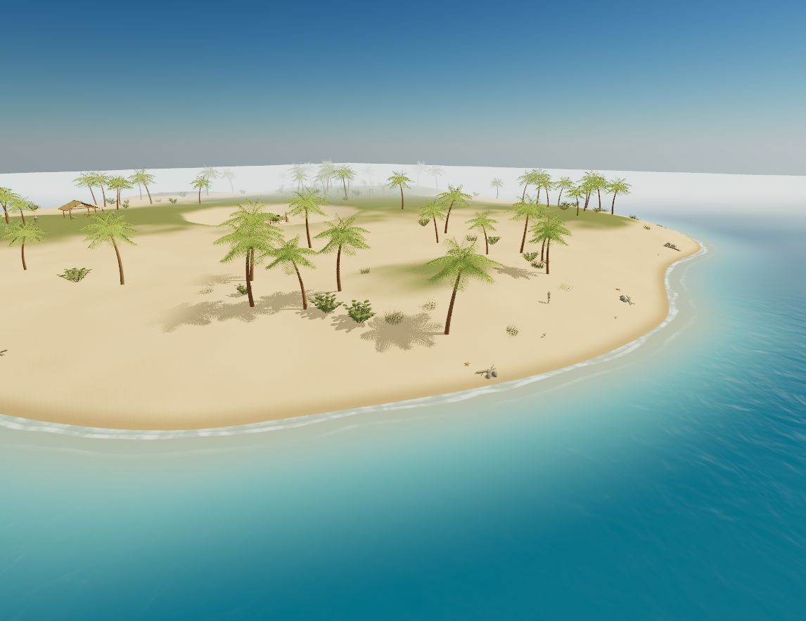
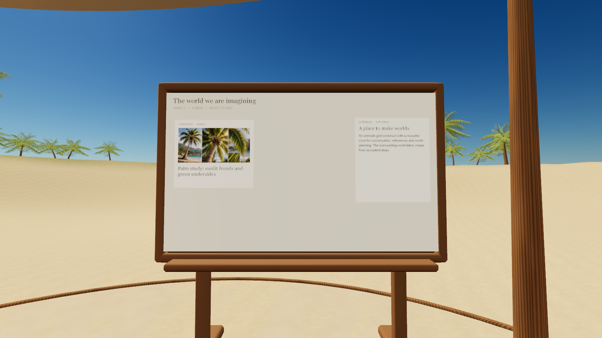
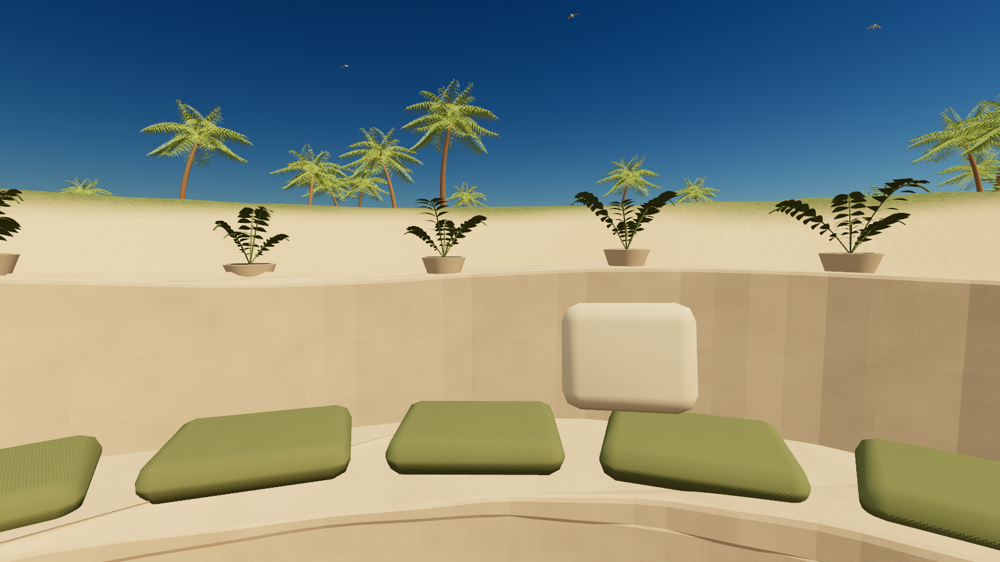
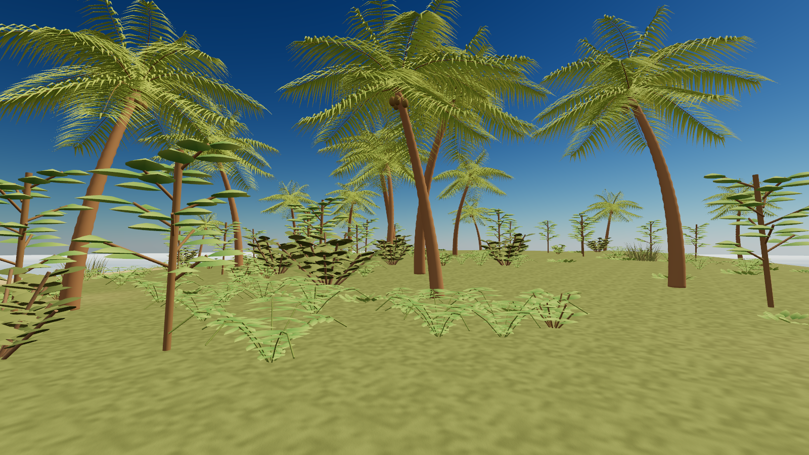

Worlds you can walk into.
Holodeck is an early source prototype. This shelf plays exported scenes. There is no agent connection here and no upload form. Clone the project to build a world on your own machine.




Scenes
Make your own
npm ci installs dependencies once. Launch does not download them. It creates a cove beside the checkout when that folder is new, starts the local server, and opens the world.
git clone https://github.com/instruktlabs/holodeck.git
cd holodeck
npm ci
node bin/holodeck.mjs launchThe source is github.com/instruktlabs/holodeck. Code is MIT. The bundled examples and these pictures are CC0. Your own worlds are not automatically CC0.